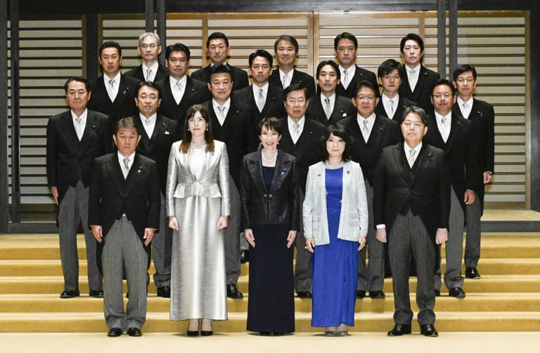

世界苦茶10月22日新闻 | 33条 | 特朗普称习近平不会侵台

特朗普称习近平不会侵台 | 特朗普普京会谈取消 | 中欧将进行稀土谈判 | 中国巡逻越南岛礁 | 高士早苗内阁确定 | OpenAI推出网页浏览器
苦茶数据
美元兑人民币：7.12（昨日7.12，前日7.12）
美元兑日元：151.78（昨日151.82，前日150.65）
上证指数：3902（昨日3916，前日3853）
标普500指数：6735（昨日6735，前日6664）
比特币：108656（昨日108383，前日11256）
布伦特原油：62.29（昨日61.46，前日60.79）
中国新闻
• 悬赏并公布台军官个资 华府智库：大陆发起新认知战。
中国大陆近日发布悬赏公告，指控18名台湾军官及军情人员从事分裂活动，并公布了他们的个人信息。华盛顿智库美国企业研究所认为，这显示大陆发起了一场新的认知战，意图在台湾军方、政府及社会散布关于大陆势力渗透台军的疑虑。综合“香港01”和台湾《联合报》报道，美国企业研究所星期一在网站刊出的台海两岸周报指出，台湾军官极少前往大陆，这些悬赏公告不太可能导致他们被捕。美国企业研究所分析认为，这显示大陆很可能正推行针对台湾军方及社会的新型认知战策略。“公告内容包含被指控者的个人信息，暗示台湾军方及军事情报机构内部可能被高度渗透。这可能导致台湾民众对军方的信任度下降。
• 叶刘淑仪或弃选香港立法会 北京欲培育新一代建制派。
自2008年就担任香港立法会议员的前保安局局长叶刘淑仪，今年很有可能放弃竞逐连任。受访学者认为，叶刘淑仪若弃选，反映了北京希望在香港培育新一代的建制派，使特区政府施政更符合新时代治港理念。香港立法会将于12月7日举行换届选举，星期五开始接受提名。不过，当地政圈近来流传，立法会议员的退休年龄界线为70岁。本届立法会共有12名议员年届70岁或以上，当中多人早前已宣布退下火线。至于身兼行政会议召集人的重量级建制派人物叶刘淑仪，据传也因年届75岁而连任无望，但迟迟未表态。叶刘淑仪10月13日出席立法会一个事务委员会会议后，被大批传媒追问去向时显得不耐烦。
• 涉嫌盗窃巴黎自然历史博物馆展品 一名中国女子被起诉。
一名中国女子因涉嫌盗窃巴黎自然历史博物馆中的黄金被捕并被起诉。该案是近期以来针对法国文化机构的重大入室盗窃案之一。这起盗窃案发生在9月16日。根据巴黎检察官贝库奥的通报，9月30日，一名24岁的中国女子盗窃巴黎自然历史博物馆展品，后在巴塞罗那被捕。据悉，她盗窃的黄金价值超过100万美元。这名嫌疑女子于10月13日被移交给法国当局，当日即被控“盗窃和刑事共谋”罪，被法国警方拘留。调查显示，在巴黎作案后，这名女子当天就离开法国，正准备返回中国。检察官表示，该女子被捕时正试图处理近1公斤的熔化金块。
• 中国海警在南海巡逻越南控制的礁屿。
中国海警在南海巡航越南控制的有争议暗礁 航迹数据称三艘舰船上周环绕包括越南已建设施的若干地物 根据海上追踪数据，被编号为4301、5009和21559的海警舰艇执行的巡航目的尚不明确。此举发生在南海紧张局势升温之时——中国与越南、菲律宾及其他竞争主权声索方就领海存在争议——且在北京与河内重申“妥善处理海上问题”承诺之后。近年来中国海警与菲律宾船只时有冲突，但在与越南的海上争端中总体上较少与对方爆发公开对抗。上周中国舰艇在南沙群岛巡航，覆盖了格里尔森暗沙，新科岛，兰斯顿暗沙，柯林斯暗沙，皮尔森暗沙，艾莉森暗沙，康沃利斯南暗沙和特南特暗沙等地物。根据战略与国际研究中心的卫星监测数据。
• 中国称美国对中美洲发出的签证威胁显示“缺乏基本尊重”。
中国表示美国对中美洲的签证威胁显示“缺乏基本尊重” 华盛顿威胁对被视为“代表”中国共产党行事的该地区官员及其他人实施入境限制 国务院上月表示，将“限制那些故意代表中国共产党行事的中美洲公民的美国签证”，以及那些“明知地指挥、授权、资助、提供重大支持或实施破坏中美洲法治活动的人”的签证。中国外交部对这些指控予以谴责，称其为“恶意”指控。外交部发言人郭佳坤周二在例行记者会上表示：“美国以法治为幌子，进行非法做法，对地区国家和个人实施政治打压和经济胁迫，把国内法置于国际法和国际义务之上。指控是恶意的，毫无根据的，且缺乏对中美洲国家的基本尊重。
印太新闻
• 民调：特朗普并未认真遏制北京对台湾动武。
民调显示：唐纳德·特朗普并不认真阻止北京攻台 受访多数岛内民众认为这位美国领导人有能力但不愿阻止军事行动，尽管他有相关保证 在被问及特朗普是否愿意阻止中国大陆攻打台湾时，受访的1,070人中近45%表示不愿意，超过34%表示愿意。该民调由台湾公共意见基金会于10月13日至15日进行。在特朗普是否“有能力”阻止大陆攻击的问题上，意见几乎对半——超过45%认为有能力，接近43%认为没有能力。基金会在结果分析中指出，这反映出台湾出现“一股悲观情绪”和“深切忧虑”，显示对美国信心动摇。在特朗普第二任期内，对美国防务承诺的怀疑在台湾一直很高。
• 英伟达台湾建总部计划卡关 卓荣泰：一定要留住英伟达。
英伟达在台湾建总部的计划卡关，台湾行政院长卓荣泰表示，把英伟达留在台湾是共识，政府也会花最大的决心和力道把英伟达留下。综合《联合报》《自由时报》和中时新闻网报道，卓荣泰星期二赴立法院进行施政报告并备询时，如此回应了国民党立委洪孟楷提出的关切。洪孟楷强调，“不管哪一县市，留在台湾就是主体”。卓荣泰回应表示，把英伟达这样的国际大厂留下是政府共识。他还说：“如果台北市留不住，其他地方愿意，也可能留住的话，我们也很愿意来促成。” 卓荣泰说，内政部该协助核定地上权移转问题，中央政府都已经核定，如果台北市府还需要中央政府协助，会再跟北市府合作。
• 高市早苗内阁成员阵容基本确定。
高市早苗内阁的主要成员阵容已确定。财务相将由前地方创生担当相片山皋月担任，经济产业相将任命现经济财政·再生相赤泽亮正，官房长官则由前防卫相木原稔出任。经济财政相一职将由现任经济安全保障相城内实担任，其经济安保相将由小野田纪美女士出任。文部科学相由松本洋平担任。在自民党总裁选举中与高市早苗竞争的前干事长茂木敏充将出任外务相，现任农林水产相小泉进次郎将出任防卫相，官房长官林芳正转任总务相。法务相为平口洋，厚生劳动相为上野贤一郎，农林水产相则由复兴副大臣铃木宪和担任。长期由公明党掌管的国土交通相职位。
• 台湾国防部长警告称，关键的美制F-16V战机交易可能会延迟。
台湾国防部长警告 台湾原定在2026年底前接收洛克希德·马丁的66架该型飞机，但尚未交付一架 。台湾国防部长顧立雄承认，在明年底前完成从美国订购的全部66架F-16V战机的交付将“具有挑战性”，因为岛内尚未收到任何一架飞机。顧立雄此番表态凸显台湾对与华盛顿达成的这一最重要军购之一延迟问题日益担忧——该计划被视为在北京加大对台军事压力之际加强空中战力的关键。顧立雄周二在台北对记者表示，台湾与美国正在就F-16项目保持“密切沟通”，以解决相关问题。
• 民进党立委称赖清德计划提出550亿元国防特别预算。
台湾民进党立委王定宇星期一在美国透露，赖清德政府计划提出新的国防特别预算，规模高达新台币1.3万亿元，内容包括建立“台湾之盾”防空系统等防卫能力。王定宇出席在美国马里兰州埃利科特城举行的第24届“美台国防工业会议”时，在当地时间星期一向台湾媒体透露以上消息。不过，台湾国防部长顾立雄表示，具体金额和内容还须要经过行政院审议和立法院通过才能定案。综合《联合报》和《信传媒》星期二报道，王定宇称，台湾政府预计10月底、11月初提出这项破万亿元的“不对称作战及作战韧性特别条例草案”，将分七年编列，大部分支出集中在前四年。王定宇指出。
• 石破茂内阁总辞职，在任386天。
石破茂内阁在10月21日上午的内阁会议上正式总辞职。自2024年10月1日就任以来，石破茂的在任天数共计386天，在战后36位日本首相中排名第24位，紧随森喜朗之后。任期内，他推动了防灾专业省厅的设立，并致力于提高工资水准，同时还发表了纪念战后80年感言。在应对川普美国政府实施的关税措施方面，石破茂任命亲信、经济财政·再生相赤泽亮正为主要谈判代表，于7月就降低关税税率及促进日本对美国投资等问题达成协定。
• 川普近期访日，见高市早苗。
美国总统川普10月20日表示，近期将「去日本」。这将是1月20日启动的第2届川普政府下的首次访日，目前正在以27~29日前后的日程为中心进行调整。日本自民党总裁高市早苗将于21日在国会被选为日本首相。预计川普将与高市举行会谈，讨论日本防卫费增加和对美投资等问题。20日，川普在访问南韩之前在白宫会见记者时表示：「我将访问马来西亚，还将去日本」。川普还计划在南韩庆州开幕的亚太经合组织 领导人非正式会议前后，与中国国家主席习近平举行会谈。日美首脑会谈被认为将就经济和安全保障等广泛议题进行讨论。
• 美澳就稀土开发达成协定，日本也参与其中。
美国总统川普10月20日与澳大利亚总理阿尔巴尼斯在白宫举行会谈。两人就以稀土类为中心的重要矿产开发签署了协议文件。据白宫称，两国政府将在半年内投资超过30亿美元，开发8万亿日元规模的资源。日本也将部分参与其中。川普在开场白中表示，「这是经过5个月左右的谈判、终于要签署的协定。能够在他访问美国之前达成协定真是太好了」。川普强调称「到1年后将能够大量获得稀土和重要矿产，变得毫不费力」。阿尔巴尼斯强调称「这是进一步提高我们关系的协议」。
科技新闻
• 中国的Unitree开设课程，教授学生如何训练机器狗。
中国机器狗厂商旷世为学生开设课程，教授如何训练和理解机器狗 该课程反映出中国在增加机器人训练数据并深化产业人才储备方面的努力。在旷世官网售价约1600美元的Go2，配备公司自研的4D激光雷达——一种全向超广角扫描技术，用户可通过专用应用在地图上标定目标点，让机器狗自主移动。Go2还运行被称为“智能侧随系统”的ISS2.0，能使机器人避障、在复杂地形中导航，并在行走时匹配主人的步伐和方向。旷世表示，分级培训课程将以Go2生态为核心，整合“仿真、实训、竞赛与训练项目”衔接通道，同时保障学生安全。除提供训练套件和调试站外，课程内容还包括四足机器人的基础维护、运动控制、自治导航及二次开发。
• OpenAI 推出网页浏览器，与谷歌 Chrome 竞争。
OpenAI 周二推出自家浏览器 Atlas，与谷歌 Chrome 直接竞争。随着越来越多互联网用户依赖人工智能回答问题，这家 ChatGPT 的制造商正进军搜索入口。将其流行的 AI 聊天机器人变成在线搜索的入口，可能使全球最有价值的初创公司 OpenAI 吸引更多互联网流量和数字广告收入。若 ChatGPT 如此有效地向人们提供信息摘要，以至于他们不再浏览互联网或点击传统网页链接，这也可能进一步切断在线出版商的生命线。OpenAI 表示，ChatGPT 的用户已超过 8 亿，但许多用户是免费使用。总部位于旧金山的公司也出售付费订阅，但亏损超过盈利。
• 一项研究称，中国的模拟人工智能芯片可能比英伟达GPU快1000倍。
研究称该器件在实现与数字系统相似精度的同时，功耗低于传统计算。据本月发表的一篇论文称，47名中国科学家制造出一款超高速模拟芯片，能在用于高级科学任务和人工智能的复杂数学问题上求解，同时功耗低于传统计算。由北京大学研究人员设计的这款模拟器件使用了由电阻材料制成的存储芯片。研究团队表示，随着未来改进，它的计算速度可以达到顶级数字处理器的一千倍。“精度长期以来一直是模拟计算的核心瓶颈，”研究人员在10月13日发表在同行评审期刊《自然电子学》上的论文中写道。（翻评：选择这一篇是说明南华早报的特征，作为中国对海外的科技光明论大外宣。）
经济新闻
• 埃塞俄比亚称正与中国商谈将美元贷款转换成人民币贷款。
埃塞俄比亚已开始与中国进行谈判，计划将该国欠北京的53.8亿美元债务中的至少一部分转换为人民币计价贷款，此举是效仿肯尼亚，并有助于推动人民币国际化。埃塞俄比亚央行行长特卡林格10月17日在华盛顿出席国际货币基金组织年会期间受访透露，他在上月访问北京时，已与中国进出口银行和中国人民银行讨论了进行上述安排的可能。特卡林格说：“中国现在是我们非常重要的合作伙伴，贸易、投资规模都在增长。所以安排一些货币互换确实很有意义，将这些进行转换也是如此。因此，这件事正在努力中，我们已正式提出请求并在推进。（翻評：這個很有可能會在非洲和拉美成為一股潮流。）
• 中国出口管制生效在即 全球车企竞相寻求稀土替代来源。
中国稀土出口新规将在11月8日实施，汽车制造商正在全球范围内搜寻关键稀土资源，担忧稀土供应不足可能导致零部件短缺和工厂关闭。路透社引述业内人士说，中国10月9日宣布新的出口管制措施后，一些中国稀土出口商立即收到来自海外客户的大量订单。不过，即便中国供应商能在11月8日出口管制生效前完成新订单，海运到欧洲也可能需要45天，而稀土瓶颈的威胁是汽车行业面临的诸多难题之一。中国将在下月实施多项出口管制措施，涉及锂电池和人造石墨负极材料相关物项、中重稀土相关物项等，引发人们对电动汽车零部件供应的担忧。丰田汽车北美集团采购供应商发展副总裁格里姆说，中国的新措施能在两个月内让整个汽车行业停摆。
• 日本警告越南禁摩令或导致大量工人失业。
今年七月，越南总理范明政发布了一项禁摩令，计划从2026年中期开始，禁止汽油摩托车进入越南首都河内的市中心，并计划逐步扩大禁令范围，以减少严重的空气污染。越南作为有名的摩托大国，这一禁令自然引发了多方关注。据知情人士透露，日本政府和该国一些顶级制造商已经警告越南，禁摩令可能会导致大规模失业，并扰乱越南的摩托车市场。日本驻河内大使馆近日致函越南当局，称这一突然的禁令可能影响配套行业的就业，如摩托车经销商和零部件供应商。日本大使馆还敦促越南当局考虑电气化的适当路线图，包括准备阶段和分阶段实施规定。
• 荷兰部长将会见中国部长化解安世争议。
中美科技战下围绕安世半导体的争议延烧，安世中国区传出荷兰总部停止支付薪金的消息，但这一说法被荷兰总部驳斥。荷兰经济部长卡雷曼斯透露，将在几天内与中国部长会见，商讨化解僵局。荷兰政府上月底以安世内部有严重治理缺陷，关键技术存在被转移至中国母公司闻泰科技的风险为由，接管了这家欧洲晶片制造商。法院文件显示，美国曾警告安世，须更换中国籍首席执行官，以避免被列入制裁名单。外界关注荷兰政府接管安世是否因美国施压。据路透社报道，卡雷曼斯星期天接受荷兰电视节目“Buitenhof”访问时回应说，中国“认为我们与美国联手”干预安世，但这次行动的实际目的。
• 冯德莱恩将于2026年进一步加大对住房问题的推动力度。
欧盟委员会主席乌尔苏拉·冯德莱恩在周二公布布鲁塞尔2026年立法议程时，宣布了与住房相关的重大举措，强调欧盟继续努力应对全区性的生活成本危机。冯德莱恩在斯特拉斯堡向欧洲议会发表演讲时表示：“可负担性是本届委员会2026年工作计划的一个主要议题”，并强调必须解决住房高昂的问题，以“保护我们的公民并维护我们的价值观”。她问道：“如果全职工作的人都养活不了自己，欧洲还如何具有竞争力？如果他们因为找不到住房而无法住在优质就业所在的地方，又怎么行？
• 中国同意在布鲁塞尔举行危机会谈，讨论稀土问题的妥协方案。
中国同意赴布鲁塞尔举行危机会谈，稀土与恩智浦事件愈演愈烈 欧盟贸易专员将与中方对口官员会面，寻求对中国收紧稀土出口限制的“紧急解决方案” 。欧盟贸易专员马洛什·舍甫科维奇表示，中国商务部长已接受就“紧急”问题赴布鲁塞尔的邀请。欧盟正试图化解北京对稀土矿出口的限制并平息围绕荷兰公司Nexperia的争议。欧盟希望中国放宽对稀土元素及磁体的出口许可要求——这些材料对制造高科技产品至关重要，从战斗机到电动汽车均需用到——而这些限制本月初已被扩展。欧盟也希望避免Nexperia引发重大后果。
• 据消息人士称，面对贸易紧张局势，中国正考虑与日本和韩国进行货币互换。
消息人士称 为加强地区金融联系并推动人民币使用，中国正与日本和韩国——两国均为美国盟友——就可能的三边货币互换进行磋商，以巩固区域金融安全网并深化经济合作，一位知情人士透露。该消息人士称，中国人民银行行长潘功胜上周在华盛顿举行的国际货币基金组织—世界银行年会期间，在会场边缘与韩国同行Rhee Chang-yong和日本同行上田和夫就此问题进行了接触。“他们一直在推动三边合作，相关谈判已持续一段时间，”该人士在要求匿名的情况下表示。货币互换是中央银行之间常用的一种工具，用以提供本币流动性。在多边机构救助行动之外。
俄乌战争
• 俄罗斯在大规模夜间袭击中用弹道导弹打击乌克兰城市。
10月22日夜间，莫斯科对乌克兰发动大规模空袭，基辅及其他乌克兰城市发生爆炸。此次袭击发生在乌克兰据总参谋部称对俄罗斯发射“风暴阴影”导弹进行大规模打击不久之后。乌方称该次打击疑似命中俄方布良斯克一处化工厂，该厂生产俄罗斯导弹的重要部件。基辅独立报记者在现场报道，基辅居民当地时间约凌晨1:10在空军发布弹道导弹预警后不久听见爆炸声。大约30分钟后又发生了数轮爆炸。第聂伯、扎波罗热及港口城市伊兹梅尔也有爆炸报告。撰稿时袭击仍在进行中，后果尚在核实。基辅市长维塔利·克里琴科报道，防空部队正努力拦截对基辅的袭击。市内至少发生一起火灾。
• 特朗普与普京的布达佩斯峰会被搁置，“俄罗斯要的太多”。
据路透报道，周二美俄两国搁置了特朗普与普京原定在布达佩斯举行的峰会于，因莫斯科拒绝立即在乌克兰停火，使谈判努力蒙上阴影。白宫一名高级官员告诉路透社，“目前没有特朗普与普京近期会面的计划”，美国国务卿卢比奥与俄罗斯外长拉夫罗夫声称进行了一次“富有成效的通话”，但双方决定不举行面对面会谈。上周，特朗普曾与普京通电话，并在白宫会见了乌克兰总统泽连斯基。特朗普原希望在阿拉斯加8月峰会未推动谈判进展后，再次与普京举行高调会晤。他宣布和普京很快将在匈牙利会面，试图为乌克兰战争画上句号。但普京始终不愿作出让步。拉夫罗夫和卢比奥周一通电话后。
• 欧盟接近达成协议，将动用被冻结的俄罗斯资产为乌克兰提供资金。
在比利时表示不会阻拦后，欧盟领导人将指示欧洲委员会起草一项法律提案，利用冻结的数十亿欧元俄罗斯国家资产为乌克兰提供一笔巨额贷款。若这项有争议的提案获采纳，最多可动用1400亿欧元，为乌克兰的战争努力再提供两到三年的资金，资金来源为在2022年2月俄罗斯全面入侵乌克兰后被冻结的俄罗斯国家资产。拥有执行权的欧洲委员会最早在9月提出这一设想，但在提出具体方案前一直在等待欧洲各国元首和政府首脑的明确同意。27位欧盟领导人可能会在周四于布鲁塞尔召开的季度欧洲理事会会议上给予这一同意。
世界新闻
• 以色列收到两具哈马斯称为已遇难人质的遗体。
以色列收到哈马斯称为遇难人质的两具遗体 以色列方面收到两具被哈马斯称为此前在加沙被扣为人质的遇难者遗体。以色列军方表示，两具棺木由红十字会交给驻巴勒斯坦领土的部队，红十字会此前从哈马斯手中接收了遗体。以色列国防军称，军方护送的棺木已越境进入以色列，并将被送往特拉维夫进行正式辨认。如果身份得到确认，意味着在本月早些时候由美国斡旋的停火协议第一阶段中，哈马斯已移交28名遇难以色列人质中的15具遗体。根据协议，全部20名在押幸存人质在协议达成后不久获释。此前的人质转移中，哈马斯曾交付过一具巴勒斯坦人的遗体。
• 哥伦比亚法院推翻对前总统的定罪。
哥伦比亚法院撤销前总统定罪 哥伦比亚前总统在被判12年软禁后，两项贿赂与欺诈定罪被撤销。阿尔瓦罗·乌里韦在八月的审判中被判刑，成为哥伦比亚首位被刑事定罪的国家领导人，时年73岁的他被法官判处最高刑罚。针对他的案件与指控有关，称他曾命令一名律师贿赂被监禁的准军事人员，以抹黑其与这些组织有关的说法。乌里韦一直坚称自己无罪。这位2002年至2010年任总统的右翼政治家以对左翼法arc游击队发动激烈攻势而闻名，仍然是这个南美国家的有影响力人物。美国国务卿马可·卢比奥此前批评乌里韦的定罪，称他唯一的“罪行就是不懈地为保卫祖国而战”。乌里韦最初部分基于前准军事指挥官路易斯·卡洛斯·贝莱斯的证词被定罪。
• 特朗普的反气候运动搅乱了欧盟为COP30的筹备工作。
布鲁塞尔 — 特朗普政府为阻止世界首个针对航运的全球碳定价所发动的行动，周二在欧盟内部气候讨论中掀起波澜，因希腊阻止该集团重新支持这项备受争议的征费。上周在国际海事组织的一次会议上，雅典放弃了对该费用及其他旨在减少航运温室气体排放措施的支持，向业界和美国的压力妥协。周二，欧盟环境部长批准了该集团为今年COP30气候峰会制定的联合谈判立场——这在很大程度上是一次走过场的批准——此前希腊最初因文本中提及国际海事组织协议而对该文本行使否决权，导致批准大幅延迟。
• 德国梅尔茨因将遣返移民与“城市景观问题”挂钩而遭到抨击。
德国总理弗里德里希·梅尔茨因使用批评者称其取自极右翼剧本的反移民言辞而面临愈演愈烈的抗议，尽管他誓言要明确将自己的保守派与不断崛起的德国另类选择党划清界限。梅尔茨在上周访问德国东部勃兰登堡州时，被问及他抑制极右翼反移民的AfD崛起的策略时表示，有一个“城市面貌上的问题”，可以通过遣返移民来解决。
• 大多数美国人担心明年医疗费用将上涨，AP‑NORC 民调显示。
诺尔克民意调查中心的一项新民调显示，大多数美国成年人担心医疗费用上升。随着人们为明年的医疗保障做出选择，以及一场政府关门使数百万人的未来医疗费用处于不确定状态，这种担忧尤为明显。该调查发现，大约六成美国人“非常”或“极其”担心在未来一年内医疗费用会上涨——这种担忧跨越各年龄层，包括有保险和无保险的人群。许多美国人还有其他医疗相关的焦虑。民调显示，大约四成美国人“非常”或“极其”担心无法支付所需的医疗或药物费用、在需要时无法获得医疗服务，或失去/没有医疗保险。领取联邦医疗保险的人已在为明年的保障做选择，许多其他健康计划的开放报名期也将在十一月迅速到来。
• 被视为蓝州的新泽西预计今年11月的州长竞选将异常胶着。
蓝色的新泽西州预计今年11月的州长选举将非常接近。作为全国少数在奇数年举行的州长选举之一，这场选举吸引了全国关注，民调显示两位领先候选人之间的差距愈发缩小。民主党众议员，曾任海军飞行员的米基·谢里尔于2018年首次当选国会，正与亲特朗普的共和党人，长期从政且经营小型企业的杰克·恰塔雷利对决。在最后几周，双方互相发起愈发人身化的攻击，并分别获得各自党内重量级人物的背书。据Axios报道，今年早些时候曾endorse恰塔雷利的总统特朗普计划为这位共和党候选人主持电话集会。与此同时，前总统巴拉克·奥巴马上周发布视频为谢里尔背书。
• 有关种族和性别的书籍将在部分军事基地的学校图书馆重新上架。
联邦法官周一下令国防部将有关性别和种族的书籍归还给部分军事基地的学校图书馆。4月，驻弗吉尼亚，肯塔基，意大利和日本军事基地学校的12名学生声称，他们在就读的国防教育活动学校中近600本书被移走，侵犯了他们的第一修正案权利。这些学生为现役军人子女，年级从学前班到11年级不等。美国公民自由联盟，肯塔基州ACLU和弗吉尼亚州ACLU代表这些家庭提交动议，要求归还“因可能违反行政命令而已被隔离或移除的所有书籍和课程材料”。今年早些时候，特朗普总统发布行政命令，要求联邦机构移除并禁止任何宣扬“性别意识形态和歧视性平权意识形态”的材料。